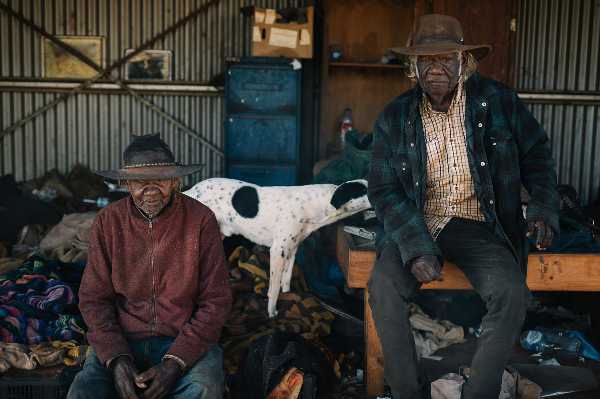

"Most of our people in community are just on a blanket on the ground. These beds will come in handy. Mainly for the old elders. Getting up and down off the ground is very hard."
52
faces and voices on the record, in their own words
A living, public record of the people who make and sleep on Goods. One face, one voice, one place, every week. Built with community, paid back to community, and ending in an open door rather than a report.
Humans of New York did not start with a book. It started with a feed that earned trust one face at a time for years; the books were printed from a corpus people already loved, and the feed went on to raise about US$20 million for the people in it. StoryCorps shows the durable version: the consent-governed archive IS the institution, and books and broadcasts are cuts from it.
We already own the hard part. Empathy Ledger holds 240 storytellers, transcripts, quotes, consent gates and place data. The Utopia field note proved the format. The decision is to surface this as the centering artifact: an accumulating ledger of real people, in their own words, on country.
The book and the film still happen. They come FROM the corpus: a team of people aligning their skills around stories people already love, with what they earn going back to the communities whose stories they are. The ledger starts this month with material we already hold and have cleared.
The whole thing rests on a unit small enough to never miss a week. One photo. The person's words, verbatim. Their name and their place. Nothing else carries the post.

Pictured: sitting down with the old men, Utopia homelands.
"Most of our people in community are just on a blanket on the ground. These beds will come in handy. Mainly for the old elders. Getting up and down off the ground is very hard."
The rule this card teaches: who is pictured and who is speaking are tagged separately and both named, every time. When we hold a portrait of the speaker, face and voice are the same person. When we do not, the photo carries its own caption and the gap goes on the shoot list. Every photo gets people-tagged at capture: who is in frame, recorded on the day.
One person, three artifacts, all from material we already hold. Karen Liddle, Traditional Owner, Oonchiumpa. Four of her quotes are consent-cleared and live on the Utopia field note today.
"To see kids' faces with joy after making a bed, it just really hits you."
Two days in Alice Springs. Young people from Oonchiumpa built Stretch Beds, then rode out with the deliveries to the homelands. Karen has been saying it from the start: there is always a story behind a child.
Have: quote cleared, context true, byline ready. Costs nothing. Publishable this week.
Have: the build at Alice Springs from the May set (hands, planks, the young people at work). Captioned honestly: pictured is the build.
Gap: a portrait of Karen on country, named on the day. First item on the next trip's shoot list, so her face and her voice can sit together.
Have: footage in media/, ffmpeg cut tools in tools/. Confirm: Karen's May audio is clean enough; if not, her words go on screen as text over the build.
This is the test of the whole idea: if these three cannot be made in a week from what we hold, the cadence is not real. They can.
One face, one voice, one place. Site first, then social.
The Utopia pattern. Every trip ships one within two weeks.
The quarter in three voices, ending in an invitation out.
A printed annual from the consented feed. Launched in community first.
Each field trip is captured once and cut four ways. Nothing is produced for one purpose only, and nothing needs new capture infrastructure beyond the trips already happening.
| Audience | What they get | The cut |
|---|---|---|
| Public | Compounding familiarity with real people: Mykel, Karen, Katrina, the makers and the households | Weekly post |
| Funders | Traction with faces, tied to the canonical numbers (496 beds, 9 communities), then an invitation onto country to meet it | Quarterly cut as the door; the trip is the proof |
| Community | Their record, under their control: storyteller-owned pages, paid stories, unpublish at will, the printed volume launched on country first | Empathy Ledger + Volume 1 |
| Movement | The worked example of consent-governed storytelling other A Curious Tractor projects plug into | The protocol + the platform itself |
Lineage worth naming: Mukurtu, the world standard for Indigenous community archives, began with the Warumungu community in Tennant Creek. The same community that named Pakkimjalki Kari. We are building in a recognised tradition, with a product attached.
The people who want to know more and hold the means to change things do not get a forum, a white paper, or a PDF impact report. They get an invitation: come out with us, sit down with the people in the ledger, see the work where it happens.
The ledger builds the interest week by week. The trip converts it. The community hosts it, on their terms, and hosting is paid community work. A funder who has sat on country with Karen and the old men does not need an impact report; they have met the impact, and they know exactly what their capital changes.
Every quarterly cut ends the same way: not "read more" but "come out". Visits run on community consent like everything else in the ledger.
The ledger has a map view. Every post is pinned where it happened. Click a pin, meet a person, hear their voice. That is the whole feature.
The map answers three questions at a glance: where the work is, who is there, and where it is growing. A year of weekly posts fills it in pin by pin, and that filling-in IS the impact picture. No charts, no dashboard.
It is also the tour menu. The places on the map are the places you can be invited to. And it already runs on data we hold: every Empathy Ledger media asset carries place and GPS, so the map is a view over the spine, not a new system.
Cultural guardrail: pins sit at the community level only, never on a house or an outstation, and a community can ask for its pin to come off the public map at any time.
A year from now there is a body of work nobody can argue with: a growing public record of real people, made with them, owned with them. Funders see traction. Communities see themselves. The movement sees a model it can copy.
All of it from trips already happening, inside the year's $50K storytelling budget. The quarter-by-quarter detail lives in the decision report, not in this pitch. Nothing depends on a publisher, a broadcaster, or a production company saying yes.
Trip: [name + dates, Ben to fill] · Communities: [fill]
What the trip comes home with, per cleared person:
That single capture set feeds four to six weekly posts, the trip's field note, and the quarter's funder cut. The ledger-story skill drafts them; Ben reviews and publishes.